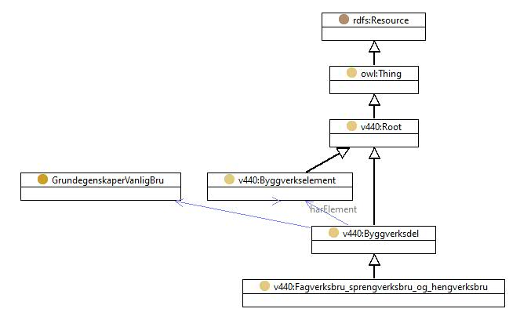

https://ontologi.atlas.vegvesen.no/v440/core/v440-owl#Fagverksbru_sprengverksbru_og_hengverksbru
Class v440:Fagverksbru_sprengverksbru_og_hengverksbru

rdf:type
owl:Class
rdfs:label
Truss bridge, Batter-post bridge and inverted suspension truss bridge
Fagverksbru sprengverksbru og hengverksbru
rdfs:subClassOf
v440:Byggverksdel
owl:disjointUnionOf
[
v440:Fagverksbru_kontinuerlig_med_varierende_hoyde
,
v440:Skrastagfagverksbru
,
v440:Fagverksbru_fritt_opplagt_med_buet_overgurt
,
v440:Sprengverksbru
,
v440:Andre_fagverk_sprengverk_og_hengverk
,
v440:Parallellfagverksbru
,
v440:Hengefagverksbru
,
v440:Hengverksbru
]
v440:avsnitt
V-6.1
v440:kapittel
V-6
v440:kode
6
References
as owl:disjointUnionOf (
v440:Byggverksdel
)
as rdfs:subClassOf (
v440:Sprengverksbru
,
v440:Skrastagfagverksbru
,
v440:Parallellfagverksbru
,
v440:Hengverksbru
,
v440:Hengefagverksbru
,
v440:Fagverksbru_kontinuerlig_med_varierende_hoyde
,
v440:Fagverksbru_fritt_opplagt_med_buet_overgurt
,
v440:Andre_fagverk_sprengverk_og_hengverk
)
Generated with
TopBraid Composer
by
TopQuadrant, Inc.